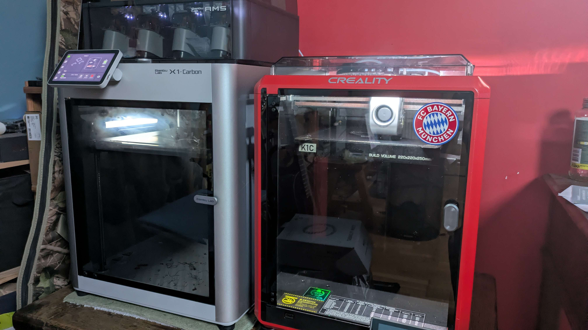

1. Impression 3D & Fabrication Additive
Bien que le MakerSpace de l'école mette à notre disposition un parc d'imprimantes 3D, nous avions la volonté d'utiliser des matériaux techniques avancés et abrasifs (nécessitant des buses et des températures spécifiques) pour garantir la rigidité de la machine. Nous avons donc fait le choix de produire les pièces techniques à domicile, en utilisant les machines personnelles des membres du groupe.
🚀 1. L'Arsenal d'Impression
Les pièces ont été réparties sur deux imprimantes à CoreXY :
- Machine Principale : Bambu Lab X1C. Utilisée pour les pièces éxigantes nécessitant une bonne précision et la gestion de matériaux techniques.
- Machine Secondaire : Creality K1C. Utilisée en renfort quand la X1C était deja utilisée.

🧵 2. Matériaux et Esthétique
Le choix esthétique s'est porté sur un design 100% Noir (Full Black). Mais c'est surtout les plastiques choisi qui font la différence mechanique et visuel :
- PETG-CF et PLA-CF (Carbon Fiber) : Ces filaments chargés en micro-fibres de carbone offrent une rigidité exceptionnelle, un aspect mat magnifique qui masque les couches, et surtout une très faible déformation thermique (warping). Parfait pour les pièces sous tension mécanique (supports moteurs, chariots).
- PLA standard : Utilisé pour les pièces de cosmétique ou les capots ne subissant pas d'efforts mécaniques majeurs.
⚙️ 3. Paramètres d'ingénierie (Orca Slicer)
Le tranchage (Slicing) a été réalisé sous Orca Slicer. Plutôt que de chercher la vitesse à tout prix, les paramètres ont été optimisés pour la résistance mécanique :
- Hauteur de couche :
0.16 mm. Le compromis parfait entre finesse et un temps d'impression raisonnable. - Périmètres (Murs) :
4-5 parois. Augmenter le nombre de murs extérieurs renforce considérablement la pièce, bien plus qu'un fort taux de remplissage. - Remplissage (Infill) :
30%avec un motif Gyroïde. Ce motifs 3D offrent une résistance mécanique égale dans toutes les directions (X, Y et Z). - Supports : Utilisation de supports Arborescents (Tree Supports). Ils permettent d'économiser du plastique, de réduire le temps d'impression et se détachent très facilement sans abîmer les pièces complexes.
Plutôt que de visser directement dans le plastique (ce qui finit par détruire le pas de vis si on démonte la machine), nous avons intégré des inserts filetés M3 en laiton. Conçus lors de la modélisation CAO, ils sont insérés à chaud à l'aide d'un fer à souder. En refroidissant, le plastique emprisonne le laiton, offrant un filetage métallique robuste.